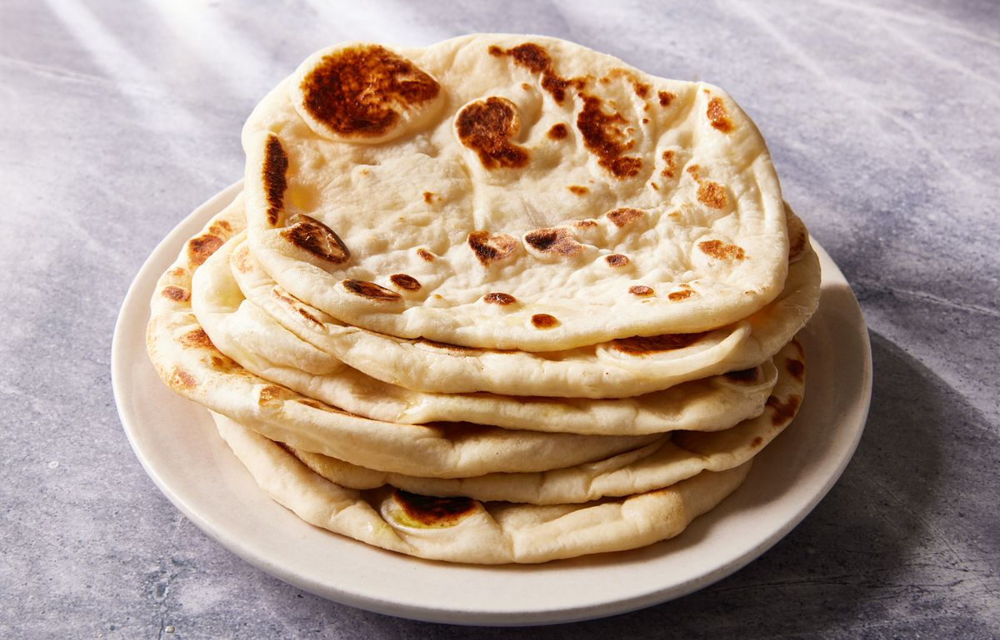

Homemade Naan

Soft and pillowy naan is easy to make at home, and it’s a world apart from
store-bought.
Traditional naan is a South Asian flatbread that is usually cooked in a
tandoor oven. The bread quickly bubbles up and yields a soft bread with
slightly crisp edges. It's perfect for soaking up all of that extra sauce
from chicken tikka masala or served as an appetizer along with garlic
hummus or any of your favorite dips. The bread is made with yogurt to keep
it soft and also gives it a very slight tang making it extra flavorful
while still allowing it to be paired with any of your favorite dishes.
What you will need to make Naan
Ingredients
- 1/2 c. lukewarm water
- 2 tsp. granulated sugar
- 1 packet active dry yeast
- 1 3/4 c. all-purpose flour, plus more for surface
- 1 tsp. kosher salt
- 1/2 c. full fat greek yogurt
- Vegetable oil, for cooking
Steps
-
In a small bowl or glass measuring cup, combine lukewarm water and
sugar. Sprinkle yeast on top and let sit until frothy, about 8 minutes.
-
In a large bowl, whisk together flour and salt. Add yeast mixture and
yogurt and use a rubber spatula to combine. Once a shaggy dough starts
to form, dump onto a clean work surface and knead with your hands until
a smooth dough forms. Transfer to a clean bowl and cover with a kitchen
towel. Let rise until doubled in size, about 1 hour.
-
On a floured surface, divide dough into 8 equal pieces. Roll each out
into a 7” circle. Keep dough covered with a clean kitchen towel.
-
In a large skillet over medium-high heat, heat enough oil to lightly
coat the bottom of the pan. Working one at a time, cook dough until
blistered and dark golden in spots, about 3 minutes per side. Adjust
heat and add more oil as needed.
Back to Home